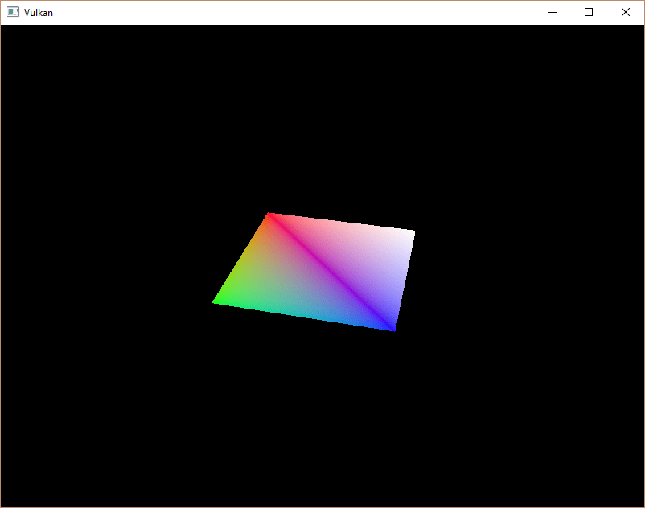

Descriptor pool and sets
Introduction
The descriptor set layout from the previous chapter describes the type of descriptors that can be bound.
In this chapter we’re going to create a descriptor set for each VkBuffer resource to bind it to the uniform buffer descriptor.
Descriptor pool
Descriptor sets can’t be created directly, they must be allocated from a pool like command buffers.
The equivalent for descriptor sets is unsurprisingly called a descriptor pool.
We’ll write a new function createDescriptorPool to set it up.
void initVulkan() {
...
createUniformBuffers();
createDescriptorPool();
...
}
...
void createDescriptorPool() {
}We first need to describe which descriptor types our descriptor sets are going to contain and how many of them, using VkDescriptorPoolSize structures.
vk::DescriptorPoolSize poolSize(vk::DescriptorType::eUniformBuffer, MAX_FRAMES_IN_FLIGHT);We will allocate one of these descriptors for every frame.
This pool size structure is referenced by the main VkDescriptorPoolCreateInfo:
vk::DescriptorPoolCreateInfo poolInfo{ .flags = vk::DescriptorPoolCreateFlagBits::eFreeDescriptorSet, .maxSets = MAX_FRAMES_IN_FLIGHT, .poolSizeCount = 1, .pPoolSizes = &poolSize };Aside from the maximum number of individual descriptors that are available, we also need to specify the maximum number of descriptor sets that may be allocated:
The structure has an optional flag similar to command pools that determines if individual descriptor sets can be freed or not: VK_DESCRIPTOR_POOL_CREATE_FREE_DESCRIPTOR_SET_BIT.
We’re not going to touch the descriptor set after creating it, so we don’t need this flag.
You can leave flags to its default value of 0.
vk::raii::DescriptorPool descriptorPool = nullptr;
...
descriptorPool = vk::raii::DescriptorPool(device, poolInfo);Add a new class member to store the handle of the descriptor pool and call vkCreateDescriptorPool to create it.
Descriptor set
We can now allocate the descriptor sets themselves.
Add a createDescriptorSets function for that purpose:
void initVulkan() {
...
createDescriptorPool();
createDescriptorSets();
...
}
...
void createDescriptorSets() {
}A descriptor set allocation is described with a VkDescriptorSetAllocateInfo struct.
You need to specify the descriptor pool to allocate from, the number of descriptor sets to allocate, and the descriptor set layout to base them on:
std::vector<vk::DescriptorSetLayout> layouts(MAX_FRAMES_IN_FLIGHT, *descriptorSetLayout);
vk::DescriptorSetAllocateInfo allocInfo{ .descriptorPool = descriptorPool, .descriptorSetCount = static_cast<uint32_t>(layouts.size()), .pSetLayouts = layouts.data() };In our case, we will create one descriptor set for each frame in flight, all with the same layout. Unfortunately, we do need all the copies of the layout because the next function expects an array matching the number of sets.
Add a class member to hold the descriptor set handles and allocate them with vkAllocateDescriptorSets:
vk::raii::DescriptorPool descriptorPool = nullptr;
std::vector<vk::raii::DescriptorSet> descriptorSets;
...
descriptorSets.clear();
descriptorSets = device.allocateDescriptorSets(allocInfo);The descriptor sets have been allocated now, but the descriptors within still need to be configured. We’ll now add a loop to populate every descriptor:
for (size_t i = 0; i < MAX_FRAMES_IN_FLIGHT; i++) {
}Descriptors that refer to buffers, like our uniform buffer descriptor, are configured with a VkDescriptorBufferInfo struct.
This structure specifies the buffer and the region within it that contains the data for the descriptor.
for (size_t i = 0; i < MAX_FRAMES_IN_FLIGHT; i++) {
vk::DescriptorBufferInfo bufferInfo{ .buffer = uniformBuffers[i], .offset = 0, .range = sizeof(UniformBufferObject) };
}If you’re overwriting the whole buffer, like we are in this case, then it is also possible to use the VK_WHOLE_SIZE value for the range.
The configuration of descriptors is updated using the vkUpdateDescriptorSets function, which takes an array of VkWriteDescriptorSet structs as parameter.
vk::WriteDescriptorSet descriptorWrite{ .dstSet = descriptorSets[i], .dstBinding = 0, .dstArrayElement = 0, .descriptorCount = 1, .descriptorType = vk::DescriptorType::eUniformBuffer, .pBufferInfo = &bufferInfo };The first two fields specify the descriptor set to update and the binding.
We gave our uniform buffer binding index 0.
Remember that descriptors can be arrays, so we also need to specify the first index in the array that we want to update.
We’re not using an array, so the index is simply 0.
We need to specify the type of descriptor again.
It’s possible to update multiple descriptors at once in an array, starting at index dstArrayElement.
The descriptorCount field specifies how many array elements you want to update.
The last field references an array with descriptorCount structs that actually configure the descriptors.
It depends on the type of descriptor which one of the three you actually need to use.
The pBufferInfo field is used for descriptors that refer to buffer data, pImageInfo is used for descriptors that refer to image data, and pTexelBufferView is used for descriptors that refer to buffer views.
Our descriptor is based on buffers, so we’re using pBufferInfo.
device.updateDescriptorSets(descriptorWrite, {});The updates are applied using vkUpdateDescriptorSets.
It accepts two kinds of arrays as parameters: an array of VkWriteDescriptorSet and an array of VkCopyDescriptorSet.
The latter can be used to copy descriptors to each other, as its name implies.
Using descriptor sets
We now need to update the recordCommandBuffer function to actually bind the right descriptor set for each frame to the descriptors in the shader with vkCmdBindDescriptorSets.
This needs to be done before the vkCmdDrawIndexed call:
commandBuffers[frameIndex].bindDescriptorSets(vk::PipelineBindPoint::eGraphics, pipelineLayout, 0, *descriptorSets[frameIndex], nullptr);
commandBuffers[frameIndex].drawIndexed(indices.size(), 1, 0, 0, 0);Unlike vertex and index buffers, descriptor sets are not unique to graphics pipelines. Therefore, we need to specify if we want to bind descriptor sets to the graphics or compute pipeline. The next parameter is the layout that the descriptors are based on. The next three parameters specify the index of the first descriptor set, the number of sets to bind, and the array of sets to bind. We’ll get back to this in a moment. The last two parameters specify an array of offsets that are used for dynamic descriptors. We’ll look at these in a future chapter.
If you run your program now, then you’ll notice that unfortunately nothing is visible.
The problem is that because of the Y-flip we did in the projection matrix, the vertices are now being drawn in counter-clockwise order instead of clockwise order.
This causes backface culling to kick in and prevents any geometry from being drawn.
Go to the createGraphicsPipeline function and modify the frontFace in VkPipelineRasterizationStateCreateInfo to correct this:
vk::PipelineRasterizationStateCreateInfo rasterizer({}, vk::False, vk::False, vk::PolygonMode::eFill,
vk::CullModeFlagBits::eBack, vk::FrontFace::eCounterClockwise, vk::False, 0.0f, 0.0f, 1.0f, 1.0f);Run your program again, and you should now see the following:

The rectangle has changed into a square because the projection matrix now corrects for aspect ratio.
The updateUniformBuffer takes care of screen resizing, so we don’t need to recreate the descriptor set in recreateSwapChain.
Alignment requirements
One thing we’ve glossed over so far is how exactly the data in the C++ structure should match with the uniform definition in the shader. It seems obvious enough to simply use the same types in both:
struct UniformBufferObject {
glm::mat4 model;
glm::mat4 view;
glm::mat4 proj;
};
struct UniformBuffer {
float4x4 model;
float4x4 view;
float4x4 proj;
};
ConstantBuffer<UniformBuffer> ubo;However, that’s not all there is to it. For example, try modifying the struct and shader to look like this:
struct UniformBufferObject {
glm::vec2 foo;
glm::mat4 model;
glm::mat4 view;
glm::mat4 proj;
};
struct UniformBuffer {
float2 foo;
float4x4 model;
float4x4 view;
float4x4 proj;
};
ConstantBuffer<UniformBuffer> ubo;Recompile your shader and your program and run it, and you’ll find that the colorful square you worked so far has disappeared! That’s because we haven’t taken into account the alignment requirements.
Vulkan expects the data in your structure to be aligned in memory in a specific way, for example:
-
Scalars have to be aligned by N (= 4 bytes given 32-bit floats).
-
A
float2must be aligned by 2N (= 8 bytes) -
A
float3orfloat4must be aligned by 4N (= 16 bytes) -
A nested structure must be aligned by the base alignment of its members rounded up to a multiple of 16.
-
A
float4x4matrix must have the same alignment as afloat4.
You can find the full list of alignment requirements in the specification.
Our original shader with just three mat4 fields already met the alignment requirements.
As each mat4 is 4 x 4 x 4 = 64 bytes in size, model has an offset of 0, view has an offset of 64 and proj has an offset of 128.
All of these are multiples of 16 and that’s why it worked fine.
The new structure starts with a vec2 which is only 8 bytes in size and therefore throws off all of the offsets.
Now model has an offset of 8, view an offset of 72 and proj an offset of 136, none of which are multiples of 16.
To fix this problem we can use the alignas specifier introduced in C++11:
struct UniformBufferObject {
glm::vec2 foo;
alignas(16) glm::mat4 model;
glm::mat4 view;
glm::mat4 proj;
};If you now compile and run your program again, you should see that the shader correctly receives its matrix values once again.
Luckily there is a way to not have to think about these alignment requirements most of the time.
We can define GLM_FORCE_DEFAULT_ALIGNED_GENTYPES right before including GLM:
#define GLM_FORCE_DEFAULT_ALIGNED_GENTYPES
#include <glm/glm.hpp>This will force GLM to use a version of vec2 and mat4 that has the alignment requirements already specified for us.
If you add this definition then you can remove the alignas specifier and your program should still work.
Unfortunately, this method can break down if you start using nested structures. Consider the following definition in the C++ code:
struct Foo {
glm::vec2 v;
};
struct UniformBufferObject {
Foo f1;
Foo f2;
};And the following shader definition:
struct Foo {
vec2 v;
};
struct UniformBuffer {
Foo f1;
Foo f2;
};
ConstantBuffer<UniformBuffer> ubo;In this case f2 will have an offset of 8 whereas it should have an offset of 16 since it is a nested structure.
In this case, you must specify the alignment yourself:
struct UniformBufferObject {
Foo f1;
alignas(16) Foo f2;
};These gotchas are a good reason to always be explicit about alignment. That way you won’t be caught off guard by the strange symptoms of alignment errors.
struct UniformBufferObject {
alignas(16) glm::mat4 model;
alignas(16) glm::mat4 view;
alignas(16) glm::mat4 proj;
};Remember to recompile your shader after removing the foo field.
Multiple descriptor sets
As some of the structures and function calls hinted at, it is actually possible to bind multiple descriptor sets simultaneously. You need to specify a descriptor set layout for each descriptor set when creating the pipeline layout. Shaders can then reference specific descriptor sets like this:
struct UniformBuffer {
};
ConstantBuffer<UniformBuffer> ubo;You can use this feature to put descriptors that vary per-object and descriptors that are shared into separate descriptor sets. In that case, you avoid rebinding most of the descriptors across draw calls which are potentially more efficient.
In the next chapters we’ll build upon what we just learned and add textures to our scene.